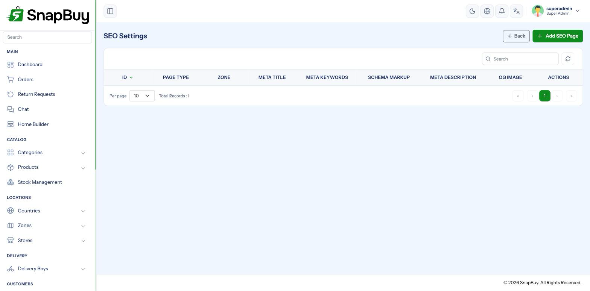

SEO Settings
Menu path: Settings → SEO Settings
Controls how your web portal appears in search results and when a link is shared on social media or messaging apps.

Applies to the web portal only
SEO affects the customer-facing website. The mobile apps are not indexed by search engines.
Per-page settings
Each key page carries its own entry — home, category listings, product pages, blogs, and static pages.
| Field | What it does |
|---|---|
| Meta Title | The clickable headline in search results |
| Meta Description | The summary beneath it |
| Meta Keywords | Largely ignored by modern search engines |
| OG Image | Preview image when the link is shared |
Writing meta titles
Keep titles to about 60 characters
Google truncates longer titles mid-word. Put the distinguishing part first — the brand name belongs at the end, not the beginning.
Good: Fresh Organic Vegetables — Same Day Delivery | SnapBuy
Weak: SnapBuy — Welcome to our online store, shop now for the best deals
Every page needs a different title
Duplicate titles across pages actively hurt ranking, and they make your search results indistinguishable to a user scanning them.
Writing meta descriptions
Around 155 characters, written as a pitch
The description does not directly affect ranking, but it decides whether someone clicks. Describe what the page offers and why it is worth a tap. Avoid keyword stuffing — it reads as spam to both search engines and people.
Open Graph images
The OG image is the preview shown when a link is pasted into WhatsApp, Facebook, X or Slack.
| Requirement | Value |
|---|---|
| Recommended size | 1200 × 630 px |
| Maximum file size | 2 MB |
| Formats | jpeg, jpg, png, gif, svg, webp |
A missing OG image costs you shares
Without one, social platforms pick an arbitrary image from the page — often a logo fragment or a UI icon — or show a bare grey box. Links shared without a preview get dramatically fewer clicks.
Keep text away from the edges
Different platforms crop the 1200 × 630 image differently. Keep any text well inside the centre so it survives every crop.
Prerequisites
| Requirement | Why |
|---|---|
| Website URL set correctly | Canonical tags and OG URLs are built from it |
| SSL installed | Search engines demote plain HTTP |
A wrong Website URL breaks SEO silently
Canonical tags built from a wrong URL tell search engines your real pages are duplicates of a non-existent site. Confirm the URL in Website Settings before tuning anything here.
Static generation caveat
Parts of the web portal are pre-rendered at build time. Changing SEO values in the panel may require the storefront to be rebuilt before search engines see them — see Web Portal Deployment.
Changes not appearing in the page source?
Check whether your storefront needs a rebuild. Panel-side changes are stored immediately, but a statically generated page keeps serving the values it was built with.
Verifying
- Open the storefront and view the page source.
- Confirm
<title>,<meta name="description">andog:imagereflect your entries. - Test a share preview with the Facebook Sharing Debugger.
- Submit your sitemap in Google Search Console.
Social platforms cache aggressively
After changing an OG image, use the sharing debugger to force a re-scrape. Otherwise the old preview persists for days.
Troubleshooting
| Symptom | Cause | Fix |
|---|---|---|
| Search results show the wrong title | Google chose its own, or the page needs re-crawling | Make the title relevant and distinct; request re-indexing |
| Shared links show no image | OG image missing or over 2 MB | Upload a 1200 × 630 image under 2 MB |
| Old preview still showing | Platform cache | Force a re-scrape in the sharing debugger |
| Changes not in the page source | Storefront needs rebuilding | Rebuild and redeploy the web portal |
| Pages not indexed | Sitemap not submitted, or site is new | Submit in Search Console and wait |
| Canonical points at the wrong domain | Website URL misconfigured | Fix it in Website Settings |